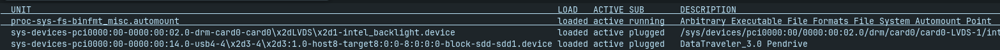

Szolgáltatások összegzett leírása
A Linux operációs rendszer erőteljes és széleskörű eszközkészlettel rendelkezik a szolgáltatások és folyamatok hatékony kezeléséhez. A szolgáltatások olyan hátterben futó alkalmazások, amelyek szervezik és tartják fenn a rendszer működését. A systemctl paranccsal indíthatjuk, állíthatjuk le és monitorozhatjuk ezeket. A folyamatok dinamikus tevékenységeket jelentenek, és a ps, top, htop paranccsal követhetők, indíthatók vagy leállíthatók. A konfigurációs fájlok, a prioritások és az erőforrások kezelése további szintet ad a finomhangoláshoz. Ezek az eszközök segítenek optimalizálni a rendszer teljesítményét és alkalmazkodni a változó igényekhez.
Szolgáltatások:
1. Szolgáltatások kezelése:
- Szolgáltatások listázása: Ez a parancs kilistázza az összes rendszerindításkor betöltött szolgáltatást, és megmutatja azok állapotát (pl., fut vagy sem).
systemctl list-units

- 2. Egy szolgáltatás állapotának lekérdezése
- A systemctl status paranccsal megnézheted egy adott szolgáltatás futási állapotát, beleértve a naplóüzeneteket és egyéb információkat.
systemctl status serviceName
- 3. Szolgáltatás indítása, leállítása, újraindítása
- Ezek a parancsok lehetővé teszik a szolgáltatások kezelését. Az indítás elindítja a szolgáltatást, a leállítás leállítja, az újraindítás pedig leállítja, majd újraindítja.
systemctl -start, systemctl -stop, systemctl -restart serviceName

2. Szolgáltatások beállítása:
- Szolgáltatások automatikus indulása/leállítása a rendszerindításkor: Ezzekkel a parancsokkal beállíthatod, hogy egy szolgáltatás automatikusan elinduljon vagy leálljon a rendszerindításkor.
systemctl enable serviceName
systemctl disable serviceName
3. Szolgáltatások konfigurálása:
- Szolgáltatások konfigurációs fájljai: Ezekben definiálhatod a szolgáltatások indítási feltételeit, környezeti változókat és egyéb paramétereket.
cd /etc/systemd/system/
nano /etc/systemd/system/serviceName.service